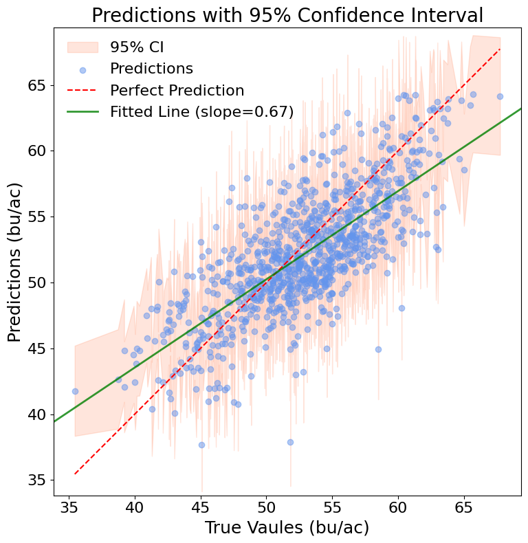
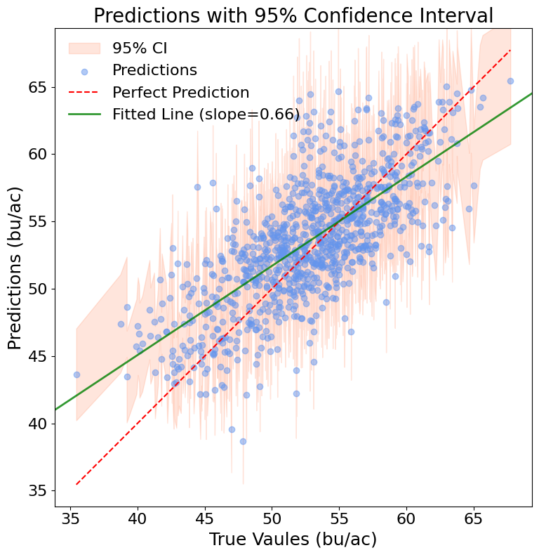
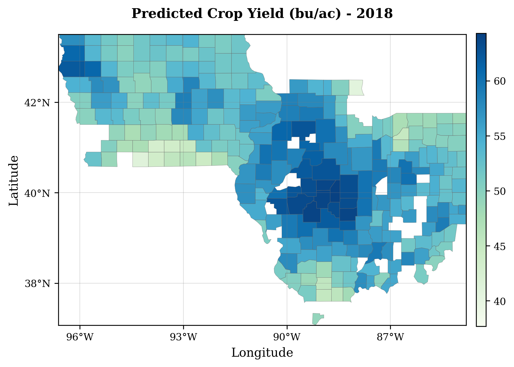
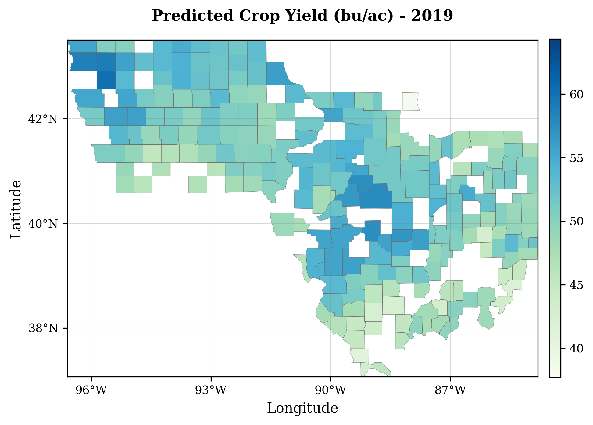
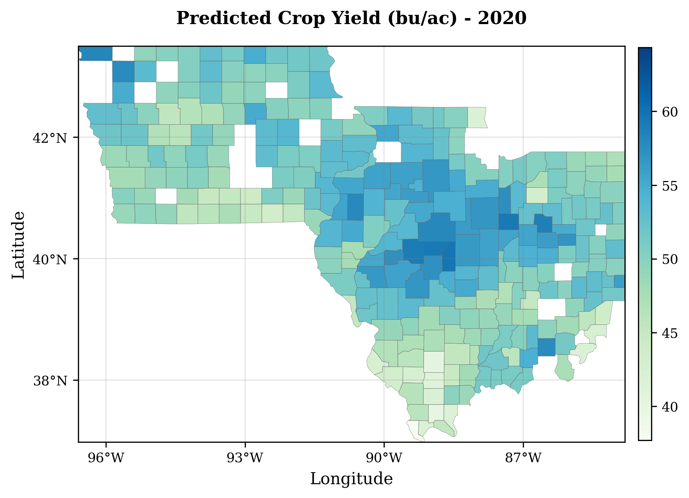
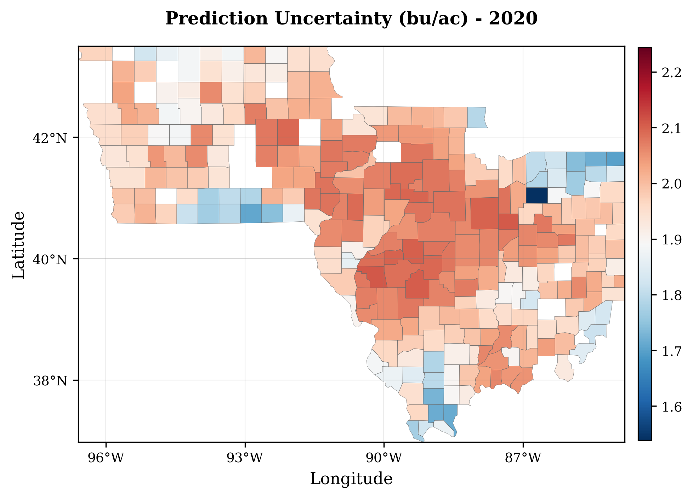

5Phenology-Guided Deep Learning with Uncertainty Quantification for Soybean Yield Prediction
Authors: Chishan Zhang, Chunyuan Diao
5.1 Overview
This notebook demonstrates the application of multiple deep learning models for crop yield estimation using satellite-derived time series data. The project showcases probabilistic modeling approaches that provide both predictions and uncertainty estimates for agricultural yield forecasting.
5.2 The Challenge with Current Yield Prediction Models
While deep learning has opened new possibilities for crop yield estimation, current approaches face two significant limitations. First, most models provide only deterministic predictions, ignoring the inherent uncertainties in agricultural systems—such as weather variability, satellite noise, and spatial heterogeneity. Without uncertainty quantification, the practical utility of these models for risk assessment is severely limited. # Second, existing models often rely on simple calendar-based aggregation (e.g., weekly or monthly averages). This approach fails to account for the biological reality of crop development, as the impact of environmental factors on yield varies substantially depending on the specific growth stage. To address these gaps, this notebook implements a phenology-guided, probabilistic deep learning framework that explicitly accounts for both temporal crop developmental stages and prediction uncertainties.
5.3 Model Architecture and Approaches
5.3.1 1. Probabilistic LSTM Model
Architecture: Long Short-Term Memory network with probabilistic output layer
Output: Mean and uncertainty estimates using Normal distribution
Loss Function: Negative Log-Likelihood (NLL)
Advantages:
Captures temporal dependencies in crop growth
Provides uncertainty quantification
Handles sequential nature of agricultural data
5.3.2 2. Probabilistic 1D-CNN Model
Architecture: Convolutional Neural Network for time series with probabilistic outputs
Layers: Multiple Conv1D layers with MaxPooling and Dense layers
Output: Mean and uncertainty estimates
Advantages:
Captures local temporal patterns
Efficient computation
Good for detecting seasonal patterns
5.3.3 3. Gaussian Process Regression (GPR)
Type: Bayesian non-parametric model
Kernel: RBF + White noise kernel with automatic hyperparameter optimization
Output: Mean predictions with uncertainty estimates
Advantages:
Natural uncertainty quantification
Flexible modeling assumptions
Works well with limited data
5.4 Key Functionalities
5.4.1 Data Preprocessing
Normalization: Z-score normalization using training data statistics
Missing Value Handling: NaN-aware statistical computations
Data Flattening: Conversion of time series to flat vectors for traditional ML models
5.4.2 Model Training and Evaluation
Train/Validation Split: 80/20 split with fixed random state
Early Stopping: Prevents overfitting in neural networks
Reproducibility: Fixed random seeds for consistent results
Cross-Model Comparison: Standardized evaluation metrics across all models
5.4.3 Uncertainty Quantification
Probabilistic Models: LSTM, CNN, and GPR provide prediction uncertainties
Uncertainty Visualization: Scatter plots with uncertainty bands
5.4.4 Feature and Temporal Importance Analysis
Permutation Importance: Identifies most influential input features
Phenological Analysis: Determines critical growth stages for yield prediction
Temporal Patterns: Visualizes importance across growing season
5.4.5 Spatial-Temporal Analysis
Multi-Year Evaluation: Model performance across different years (2018-2021)
Geographic Visualization: County-level prediction and uncertainty maps
Temporal Generalization: Tests model robustness across different growing seasons
"""=== COMPREHENSIVE IMPORTS FOR CROP YIELD ESTIMATION NOTEBOOK ===All required packages and dependencies for the entire notebook.Place this cell near the top after the overview/description section.Compatible Package Versions (tested and verified):Python: 3.11.12TensorFlow: 2.18.0Keras (within TensorFlow): 3.8.0TensorFlow Probability: 0.25.0NumPy: 2.0.2Pandas: 2.2.2Scikit-learn: 1.6.1Matplotlib: 3.10.0Seaborn: 0.13.2GeoPandas: 1.0.1"""# Standard Library Importsimport osimport sysimport timeimport randomimport warningsimport importlib.util# Core Data Science Librariesimport numpy as npimport pandas as pd# Visualization Librariesimport matplotlib.pyplot as pltimport seaborn as snsfrom matplotlib.colors import LinearSegmentedColormap# Machine Learning Librariesfrom sklearn.model_selection import train_test_splitfrom sklearn.linear_model import LinearRegressionfrom sklearn.metrics import r2_score, mean_squared_errorfrom sklearn.ensemble import RandomForestRegressorfrom sklearn.gaussian_process import GaussianProcessRegressorfrom sklearn.gaussian_process.kernels import RBF, WhiteKernel, ConstantKernel as C# Deep Learning Librariesimport tensorflow as tfimport tensorflow_probability as tfpfrom tensorflow.keras.models import Sequential, load_modelfrom tensorflow.keras.layers import LSTM, Dense, Input, Conv1D, MaxPooling1D, Flatten, Dropoutfrom tensorflow.keras.callbacks import EarlyStopping# Geospatial Librariestry:import geopandas as gpd GEOPANDAS_AVAILABLE =Trueprint("GeoPandas successfully imported")exceptImportError: GEOPANDAS_AVAILABLE =Falseprint("GeoPandas not available - geographic visualizations will be skipped")# TensorFlow Probability Distributionstfd = tfp.distributions# Suppress warnings for cleaner outputwarnings.filterwarnings('ignore', category=FutureWarning)warnings.filterwarnings('ignore', category=UserWarning, module='matplotlib')warnings.filterwarnings('ignore', category=DeprecationWarning)os.environ['TF_CPP_MIN_LOG_LEVEL'] ='2'# Suppress TensorFlow warnings# Configure TensorFlow for deterministic behaviortf.config.experimental.enable_op_determinism()physical_devices = tf.config.experimental.list_physical_devices('GPU')iflen(physical_devices) >0: tf.config.experimental.set_memory_growth(physical_devices[0], True)# Print Keras versionprint(tf.keras.__version__)
GeoPandas successfully imported
3.8.0
# Google Drive mount is optional; skip when using local download_dir.# If running in Colab with Drive storage, uncomment below:# from google.colab import drive# drive.mount('/content/drive')
Drive already mounted at /content/drive; to attempt to forcibly remount, call drive.mount("/content/drive", force_remount=True).
5.5 1. Data Loading and Preprocessing
5.5.1 Study Area
The study area includes the major soybean-producing states of Illinois, Indiana, and Iowa in the U.S. Corn Belt. County-level soybean yields (bu/ac) and phenology-guided predictors are analyzed for the period 2018–2021.
Study area map showing Illinois, Indiana, and Iowa with average soybean yields (bu/ac) from 2008 to 2021)
5.5.2 Dataset Overview
Data Download: The data can also be directly downloaded from: https://github.com/pouuh/phenology-guided-soybean-yield/releases/download/v1.0/soybean_phenology_guided_dataset.zip
This section loads the pre-processed satellite-derived time series data for soybean yield prediction. The dataset consists of:
Training Set: Multi-temporal observations from multiple growing seasons
Test Set: Holdout data for final model evaluation
Features: 14 environmental variables captured at regular intervals throughout the growing season
Target: County-level soybean yield measurements (bushels per acre)
5.5.3 Data Structure
Input Shape: (samples, timesteps, features) - 3D array representing time series
Temporal Resolution: Weekly to bi-weekly observations during growing season
Years Covered: 2018-2021 for model development and testing Loading
5.5.3.1 Input Features (X)
The input data for our models (X_train.npy, X_test.npy, [year]_X.npy) are time series with a shape of (samples, timesteps, features), where timesteps represent 6 phenological stages and features include 14 predictors:
EVI2 (Enhanced Vegetation Index 2):
Description: A satellite-derived measure of vegetation greenness and canopy health.
Significance for Yield: Higher EVI2 generally indicates a healthier, more photosynthetically active crop, which is essential for biomass accumulation and ultimately for producing higher yields through processes like pod development and seed fill. Stress events affecting EVI2 can signal potential yield reductions.
LST_Day (Daytime Land Surface Temperature in °C):
Description: The temperature of the ground surface during the day.
LST_Night (Nighttime Land Surface Temperature in °C):
Description: The temperature of the ground surface during the night.
tmax (Maximum daily air temperature in °C):
Description: Highest air temperature recorded in a day.
tmin (Minimum daily air temperature in °C):
Description: Lowest air temperature recorded in a day.
ppt (Precipitation in mm):
Description: Accumulated rainfall.
vpdmax & vpdmin (Maximum/Minimum Vapor Pressure Deficit in hPa):
Description: Measure of atmospheric dryness (the difference between how much moisture the air can hold and how much it actually holds).
Evap_tavg (Average Evapotranspiration in kg/m²/s or mm/day):
Description: Actual water loss from the soil surface (evaporation) and plant tissues (transpiration).
PotEvap_tavg (Average Potential Evapotranspiration in W/m² or mm/day):
Description: The amount of evapotranspiration that would occur if sufficient water were available.
SoilMoi0_10cm (Soil moisture at 0-10 cm depth in kg/m² or mm):
Description: Water content in the top soil.
SoilMoi10_40cm, SoilMoi40_100cm, SoilMoi100_200cm (Soil moisture at increasing depths):
Description: Water content in deeper soil layers.
5.5.3.2 Target Variable (Y)
The target variable for prediction (Y_train.npy, Y_test.npy) is: * County-Level Soybean Yield: * Unit: Bushels per acre (bu/ac). * Significance: This is the primary measure of agricultural productivity for soybeans. Accurate and timely yield prediction is crucial for farmers, policymakers, insurers, and commodity markets for planning, risk assessment, and economic forecasting.
# --- Automatic Data Download and Extraction ---import urllib.requestimport zipfileimport shutil# Download URLdataset_url ='https://github.com/pouuh/phenology-guided-soybean-yield/releases/download/v1.0/soybean_phenology_guided_dataset.zip'download_dir ='./soybean_dataset'zip_path = os.path.join(download_dir, 'dataset.zip')# Create directory if it doesn't existos.makedirs(download_dir, exist_ok=True)# Check if data already existsrequired_files = ['X_train.npy', 'Y_train.npy', 'X_test.npy', 'Y_test.npy']files_exist =all(os.path.exists(os.path.join(download_dir, file)) forfilein required_files)ifnot files_exist:print("Downloading soybean phenology guided dataset...")try: urllib.request.urlretrieve(dataset_url, zip_path)print(f"✓ Download completed: {zip_path}")print("Extracting dataset...")with zipfile.ZipFile(zip_path, 'r') as zip_ref: zip_ref.extractall(download_dir)print("✓ Extraction completed")# Remove zip file after extraction os.remove(zip_path)print("✓ Cleaned up zip file")exceptExceptionas e:print(f"✗ Error downloading or extracting dataset: {e}")raiseelse:print("✓ Dataset files already exist locally")file_folder = download_dir +'/Soybean_Yield'# Verify data files exist before loadingprint("\nVerifying data files...")forfilein required_files: file_path = os.path.join(file_folder, file)if os.path.exists(file_path):print(f"✓ Found: {file}")else:print(f"✗ Missing: {file}")# Load preprocessed time series dataprint("\nLoading training and test datasets...")X_train = np.load(os.path.join(file_folder, 'X_train.npy'))Y_train = np.load(os.path.join(file_folder, 'Y_train.npy'))X_test = np.load(os.path.join(file_folder, 'X_test.npy'))Y_test = np.load(os.path.join(file_folder, 'Y_test.npy'))print(f"Training data shape: X={X_train.shape}, Y={Y_train.shape}")print(f"Test data shape: X={X_test.shape}, Y={Y_test.shape}")print(f"Features per timestep: {X_train.shape[2]}")print(f"Timesteps per sample: {X_train.shape[1]}")
Loading training and test datasets...
Training data shape: X=(2744, 6, 14), Y=(2744, 1)
Test data shape: X=(968, 6, 14), Y=(968, 1)
Features per timestep: 14
Timesteps per sample: 6
# --- Displaying a sample of the input data (X_train) ---print(f"Shape of X_train: {X_train.shape}") # Expected: (num_samples, 6 timesteps, 14 features)if X_train.shape[0] >0:print("\nFirst sample from X_train (all 6 timesteps, first 3 features shown for brevity):")# This prints the data for the first county-year, across all 6 phenological stages,# but only for the first 3 out of the 14 features to keep the printout manageable.# Adjust slicing as needed to show a meaningful snippet.print(X_train[0, :, :3])else:print("X_train appears to be empty or not loaded correctly.")
Shape of X_train: (2744, 6, 14)
First sample from X_train (all 6 timesteps, first 3 features shown for brevity):
[[2.82751197e-01 1.50580579e+04 1.42379496e+04]
[4.98958253e-01 1.51259396e+04 1.45375792e+04]
[6.66228878e-01 1.49937500e+04 1.44459270e+04]
[6.81686673e-01 1.49110417e+04 1.43534881e+04]
[5.12841977e-01 1.48934674e+04 1.42015340e+04]
[2.50951439e-01 1.46362319e+04 1.39719171e+04]]
5.5.4 Visualizing Input Feature Dynamics
To provide a more intuitive understanding of the input data (X) fed into our models, the plots below showcase the time series for three key predictors—EVI2, Maximum Temperature, and Precipitation—across the six phenological stages. These visualizations are for three randomly selected county-year samples from the training dataset and display the data in its [Specify: ‘original (pre-normalization)’ OR ‘normalized’] form.
Observing these plots helps to: * Illustrate the temporal patterns of different environmental variables through the defined soybean growth stages. * Appreciate the sample-to-sample variability in these predictors. * Better understand the nature of the 3D input (samples, timesteps, features) that the LSTM and 1D-CNN models process. Each line in a subplot represents the sequence of values for one feature across the 6 phenological stages (timesteps) for one sample.
data_to_sample_from = X_traindata_source_label ="Original (Pre-Normalization)"# Label for titles# Define feature names and their indices within your 14 features.# These MUST match the actual order in your X_train.npy features.# Example (VERIFY AND UPDATE THESE INDICES BASED ON YOUR ACTUAL DATA):feature_map = {'EVI2': 0,'LST_Day (K)': 1,'LST_Night (K)': 2,'Max Temperature (°C)': 3, # Using tmax as an example temperature'Min Temperature (°C)': 4,'Precipitation (mm)': 5,'VPDmax (hPa)': 6,'VPDmin (hPa)': 7,'Evapotranspiration': 8,'Potential Evapotranspiration': 9,'SoilMoi0_10cm': 10,'SoilMoi10_40cm': 11,'SoilMoi40_100cm': 12,'SoilMoi100_200cm': 13}# Select features to plot (ensure these names match keys in feature_map)features_to_plot_names = ['EVI2', 'Max Temperature (°C)', 'Precipitation (mm)']selected_feature_indices = [feature_map[name] for name in features_to_plot_names]num_samples_to_plot =3if data_to_sample_from.shape[0] >= num_samples_to_plot:# Set seed for reproducibility of random sample selection if desired# np.random.seed(42) # Optional: for consistent random samples random_indices = np.random.choice(data_to_sample_from.shape[0], num_samples_to_plot, replace=False)else:print(f"Warning: Not enough samples in the dataset (found {data_to_sample_from.shape[0]}) to plot {num_samples_to_plot} unique samples.") random_indices = np.arange(min(num_samples_to_plot, data_to_sample_from.shape[0]))iflen(random_indices) >0: num_stages = data_to_sample_from.shape[1] # Should be 6 pheno_stages_labels = [f"Stage {i+1}"for i inrange(num_stages)] fig, axes = plt.subplots(nrows=num_samples_to_plot, ncols=len(features_to_plot_names), figsize=(18, 4* num_samples_to_plot), sharex=False) # sharex=False might be better if scales differ# Adjust for single sample plotting caseif num_samples_to_plot ==1: axes = np.array([axes]) # Make it 2D for consistent indexing fig.suptitle(f"Example Input Feature Time Series ({data_source_label} Data)", fontsize=18, y=1.03)for i, sample_idx inenumerate(random_indices):for j, feature_idx inenumerate(selected_feature_indices): ax = axes[i, j] time_series_data = data_to_sample_from[sample_idx, :, feature_idx] ax.plot(pheno_stages_labels, time_series_data, marker='o', linestyle='-') ax.set_ylabel(features_to_plot_names[j])if i ==0: # Set subplot titles for the first row (feature type) ax.set_title(f"{features_to_plot_names[j].split(' (')[0]}")if j ==0: # Set y-axis title for the first column (sample identifier) ax.text(-0.3, 0.5, f"Sample {i+1}", transform=ax.transAxes, rotation=90, verticalalignment='center', fontsize=14) ax.grid(True, linestyle='--', alpha=0.7) ax.tick_params(axis='x', rotation=45)# Common X-label (optional, if sharex=True)# fig.text(0.5, 0.01, 'Phenological Stage', ha='center', va='center', fontsize=16) plt.tight_layout(rect=[0, 0.03, 1, 0.97]) # Adjust layout to make space for suptitle & xlabel plt.show()else:print("No samples to plot.")
# === DATA NORMALIZATION FUNCTIONS ===def normalize_data(data, mean, std):""" Normalize time series data using z-score normalization. This function standardizes each feature across all samples and timesteps using the training set statistics to prevent data leakage. Parameters: ----------- data : numpy.ndarray Input data of shape (samples, timesteps, features) mean : numpy.ndarray Feature-wise mean values from training data std : numpy.ndarray Feature-wise standard deviation from training data Returns: -------- normalized_data : numpy.ndarray Z-score normalized data """# Prevent division by zero for constant features std_safe = std.copy() std_safe[std_safe ==0] =1e-8 normalized_data = (data - mean) / std_safereturn normalized_data# === COMPUTE NORMALIZATION STATISTICS ===# Calculate feature-wise statistics from training data onlyprint("\nCalculating normalization statistics from training data...")X_mean = np.nanmean(X_train, axis=(0, 1)) # Mean across samples and timestepsX_std = np.nanstd(X_train, axis=(0, 1)) # Std across samples and timestepsprint(f"Features with zero variance: {np.sum(X_std ==0)}")print(f"Features with NaN values: {np.sum(np.isnan(X_mean))}")# Apply normalization to both training and test setsprint("Applying z-score normalization...")X_train_normalized = normalize_data(X_train, X_mean, X_std)X_test_normalized = normalize_data(X_test, X_mean, X_std)# Update variables for consistency with rest of notebookX_train = X_train_normalizedX_test = X_test_normalizedprint("Data loading and preprocessing complete!")print(f"Training data statistics: mean={np.nanmean(X_train):.3f}, std={np.nanstd(X_train):.3f}")print(f"Test data statistics: mean={np.nanmean(X_test):.3f}, std={np.nanstd(X_test):.3f}")
Calculating normalization statistics from training data...
Features with zero variance: 0
Features with NaN values: 0
Applying z-score normalization...
Data loading and preprocessing complete!
Training data statistics: mean=0.000, std=1.000
Test data statistics: mean=0.097, std=0.915
5.6 Why Phenology-Guided Time Series Modeling?
Crop growth and yield formation are fundamentally governed by phenological development, not by fixed calendar dates. Environmental stresses such as heat, water deficit, or excessive moisture can have vastly different impacts on final yield depending on when they occur during the growing season. For example, stress during flowering or grain filling often has a disproportionately large effect compared to similar conditions during early vegetative growth.
Many existing yield prediction approaches rely on calendar-based temporal aggregation (e.g., weekly or monthly averages). While convenient, these fixed intervals may mix multiple developmental stages or split critical growth phases, thereby obscuring biologically meaningful signals.
In this notebook, we adopt a phenology-guided framework, where satellite- derived phenological transition dates are used to divide the growing season into six biologically meaningful stages. Environmental and vegetation predictors are aggregated within these adaptive stage boundaries, ensuring that the input time series aligns with actual crop development rather than arbitrary time windows. This approach improves both interpretability and the model’s ability to learn stage-specific yield sensitivities.
5.7 Why Quantify Prediction Uncertainty?
Crop yield prediction is inherently uncertain due to multiple sources of variability, including weather fluctuations, observation noise in remote sensing data, spatial heterogeneity in agricultural systems, and limitations in model structure. Deterministic point predictions alone do not convey how reliable a prediction is, which limits their usefulness for decision-making, risk assessment, and interpretation under atypical conditions.
To address this limitation, all models implemented in this notebook are formulated as probabilistic models, producing both a mean yield estimate and an associated uncertainty. These uncertainty estimates provide additional context about prediction confidence, highlighting conditions, regions, or yield ranges where the model is less certain. This is particularly important for applications such as agricultural monitoring, insurance, and climate risk assessment, where understanding prediction reliability is as critical as the prediction itself.
5.8 2. Model Development and Training
This section implements and compares three different approaches for probabilistic crop yield prediction:
Probabilistic LSTM: Captures temporal dependencies in crop development
Probabilistic 1D-CNN: Learns local temporal patterns and seasonal cycles
Gaussian Process Regression (GPR): Provides natural uncertainty quantification
All models output both mean predictions and uncertainty estimates, enabling robust decision-making in agricultural applications.
5.8.1 Key Implementation Features:
Reproducible training: Fixed random seeds across all models
Early stopping: Prevents overfitting during neural network training
Validation split: 80/20 train/validation split for hyperparameter tuning
Probabilistic outputs: All models provide prediction uncertainty estimates
5.8.2 2.1 Probabilistic Long Short-Term Memory (LSTM) Model
Model Rationale: LSTM networks excel at modeling sequential data with long-term dependencies, making them ideal for crop yield prediction where: - Early season conditions influence late season development - Critical growth stages occur at different times - Weather patterns show temporal autocorrelation
Architecture Details: - Input Layer: Accepts time series of shape (timesteps, features) - LSTM Layer: 100 hidden units with built-in memory mechanisms - Dense Layers: 100-unit ReLU layer followed by 2-unit output - Probabilistic Output: Learns both mean (μ) and uncertainty (σ) parameters
Training Configuration: - Loss Function: Negative Log-Likelihood (NLL) for probabilistic training - Optimizer: Adam with learning rate 1e-4 - Batch Size: 64 samples - Early Stopping: Monitors validation loss with patience=10
# === PROBABILISTIC LSTM MODEL IMPLEMENTATION ===# Split training data for validationprint("Creating train/validation split...")X_train_split, X_val, Y_train_split, Y_val = train_test_split( X_train, Y_train, test_size=0.2, random_state=42, shuffle=True)print(f"Train samples: {X_train_split.shape[0]}, Validation samples: {X_val.shape[0]}")# === PROBABILISTIC DISTRIBUTION SETUP ===tfd = tfp.distributionsdef normal_sp(params):""" Create a Normal distribution from neural network outputs. This function transforms raw network outputs into a well-behaved probability distribution with learnable mean and variance. Parameters: ----------- params : tf.Tensor Network output tensor with shape (batch_size, 2) First column: raw mean values Second column: raw scale parameters Returns: -------- distribution : tfp.distributions.Normal Parameterized Normal distribution """return tfd.Normal( loc=params[:, 0:1], # Mean parameter (no transformation) scale=1e-3+ tf.math.softplus(0.05* params[:, 1:2]) # Ensure positive scale )class ProbabilisticLayer(tf.keras.layers.Layer):""" Custom Keras layer that outputs distribution parameters. This layer takes the raw outputs from the dense layer and formats them for probabilistic prediction. """def__init__(self, **kwargs):super().__init__(**kwargs)def call(self, inputs):"""Transform inputs into distribution parameters.""" dist = normal_sp(inputs)return tf.concat([dist.loc, dist.scale], axis=-1)def NLL(y_true, y_pred):""" Negative Log-Likelihood loss for probabilistic training. This loss function encourages the model to: 1. Make accurate mean predictions 2. Provide appropriate uncertainty estimates 3. Avoid overconfident or underconfident predictions Parameters: ----------- y_true : tf.Tensor True target values y_pred : tf.Tensor Predicted distribution parameters [mean, scale] Returns: -------- nll : tf.Tensor Negative log-likelihood loss value """ dist = tfd.Normal( loc=y_pred[:, 0:1], scale=y_pred[:, 1:2] )return-tf.reduce_mean(dist.log_prob(y_true))# === REPRODUCIBILITY SETUP ===def set_seeds(seed_value=32):"""Set all random seeds for reproducible results.""" os.environ['PYTHONHASHSEED'] =str(seed_value) random.seed(seed_value) np.random.seed(seed_value) tf.random.set_seed(seed_value)def create_probabilistic_lstm(input_shape, lstm_units=100, dense_units=100):""" Create a probabilistic LSTM model for yield prediction. Parameters: ----------- input_shape : tuple Shape of input time series (timesteps, features) lstm_units : int Number of LSTM hidden units dense_units : int Number of dense layer units Returns: -------- model : tf.keras.Model Compiled probabilistic LSTM model """ model = Sequential([ Input(shape=input_shape), LSTM(lstm_units, name='lstm_layer'), Dense(dense_units, activation='relu', name='dense_hidden'), Dense(2, name='distribution_params'), # Output: [mean, scale] ProbabilisticLayer(name='probabilistic_output') ]) model.compile( optimizer=tf.keras.optimizers.Adam(learning_rate=1e-4), loss=NLL, metrics=['mse'] # Additional metric for monitoring )return modeldef train_and_evaluate_lstm(X_train_split, Y_train_split, X_val, Y_val, X_test, Y_test):""" Complete training and evaluation pipeline for LSTM model. Parameters: ----------- X_train, Y_train : numpy.ndarray Training data and labels X_val, Y_val : numpy.ndarray Validation data and labels X_test, Y_test : numpy.ndarray Test data and labels Returns: -------- model : tf.keras.Model Trained model mean : numpy.ndarray Mean predictions for test data uncertainty : numpy.ndarray Uncertainty estimates for test data history : tf.keras.callbacks.History Training history """# Set seeds for reproducibility set_seeds()# Create model model = create_probabilistic_lstm(input_shape=(X_train_split.shape[1], X_train_split.shape[2]))# Define callbacks early_stopping = EarlyStopping( monitor='val_loss', patience=10, restore_best_weights=True, mode='min' )# Train the model history = model.fit( X_train_split, Y_train_split, epochs=1000, batch_size=64, validation_data=(X_val, Y_val), callbacks=[early_stopping], verbose=1 )# Get predictions predictions = model.predict(X_test) means = predictions[:, 0] uncertainties = predictions[:, 1]# Calculate metrics final_r2 = r2_score(Y_test, means) final_rmse = np.sqrt(mean_squared_error(Y_test, means))print(f"\nFinal Test Metrics:")print(f"R2 Score: {final_r2:.4f}")print(f"RMSE: {final_rmse:.4f}")print(f"Average Uncertainty: {np.mean(uncertainties):.4f}")return model, means, uncertainties, history# Execute LSTM training and evaluationlstm_model, lstm_means, lstm_uncertainties, lstm_history = train_and_evaluate_lstm( X_train_split, Y_train_split, X_val, Y_val, X_test, Y_test)
# --- Plotting Training and Validation Loss (Full and Zoomed Views) ---# Ensure 'history' is the Keras History object from model.fit()fig, axes = plt.subplots(nrows=1, ncols=2, figsize=(16, 6)) # Adjust figsize as neededhistory = lstm_history# Subplot 1: Full Training and Validation Loss Curveaxes[0].plot(history.history['loss'], label='Training NLL')axes[0].plot(history.history['val_loss'], label='Validation NLL')axes[0].set_title('Full Training & Validation Loss Curve')axes[0].set_xlabel('Epoch')axes[0].set_ylabel('NLL (Negative Log-Likelihood)')axes[0].legend()axes[0].grid(True, linestyle='--', alpha=0.6)# Subplot 2: Zoomed-in View of Training and Validation Lossstart_epoch_for_zoom =200# Keep this or adjust if another start point is better# Ensure there are enough epochs to make a zoomed plot meaningfuliflen(history.history['loss']) > start_epoch_for_zoom:# X-axis range for the zoomed plot (actual epoch numbers) epoch_range_zoomed =range(start_epoch_for_zoom, len(history.history['loss'])) axes[1].plot(epoch_range_zoomed, history.history['loss'][start_epoch_for_zoom:], label='Training NLL (Zoomed)') axes[1].plot(epoch_range_zoomed, history.history['val_loss'][start_epoch_for_zoom:], label='Validation NLL (Zoomed)') axes[1].set_title(f'Zoomed Loss (Epochs {start_epoch_for_zoom}+)') axes[1].set_xlabel('Epoch') axes[1].set_ylabel('NLL (Negative Log-Likelihood)') axes[1].legend() axes[1].grid(True, linestyle='--', alpha=0.6)else:# Fallback if not enough epochs for the defined zoom axes[1].text(0.5, 0.5, 'Not enough epochs for zoomed view.', horizontalalignment='center', verticalalignment='center', transform=axes[1].transAxes) axes[1].set_title(f'Zoomed View (Epochs {start_epoch_for_zoom}+)') axes[1].set_xlabel('Epoch') axes[1].set_ylabel('NLL')plt.tight_layout()plt.show()
def evaluate_model(model, X_test, Y_test, model_name="Model"):""" Comprehensive evaluation of a probabilistic model. Parameters: ----------- model : tf.keras.Model or sklearn model Trained probabilistic model X_test, Y_test : numpy.ndarray Test data and labels model_name : str Name of the model for reporting Returns: -------- predictions : numpy.ndarray Model predictions [mean, uncertainty] """ predictions = model.predict(X_test) mean_pred = predictions[:, 0] std_pred = predictions[:, 1]# Calculate metrics final_r2 = r2_score(Y_test, mean_pred) final_rmse = np.sqrt(mean_squared_error(Y_test, mean_pred))print(f"\nFinal Test Metrics:")print(f"R2 Score: {final_r2:.4f}")print(f"RMSE: {final_rmse:.4f}")print(f"Mean Prediction Uncertainty: {np.mean(std_pred):.4f}")print(f"Min Uncertainty: {np.min(std_pred):.4f}")print(f"Max Uncertainty: {np.max(std_pred):.4f}")# Calculate prediction interval coverage within_interval = np.abs(Y_test - mean_pred) <=2* std_pred coverage = np.mean(within_interval) *100print(f"95% CI Coverage: {coverage:.2f}%")return predictionsdef plot_predictions_with_uncertainty(Y_test, predictions, title="Predictions with 95% Confidence Interval"):""" Create publication-quality prediction vs truth plot with uncertainty visualization. Parameters: ----------- Y_test : numpy.ndarray True target values predictions : numpy.ndarray Model predictions [mean, uncertainty] """ mean_pred = predictions[:, 0] std_pred = predictions[:, 1] plt.figure(figsize=(8, 8))# Calculate overall min and max for consistent axes all_values = np.concatenate([Y_test.flatten(), mean_pred.flatten()]) min_val = all_values.min() max_val = all_values.max()# Add some padding to the limits padding = (max_val - min_val) *0.05 axis_min = min_val - padding axis_max = max_val + padding# Sort for proper uncertainty band plotting sort_idx = np.argsort(Y_test.flatten()) Y_test_sorted = Y_test.flatten()[sort_idx] mean_pred_sorted = mean_pred.flatten()[sort_idx] std_pred_sorted = std_pred.flatten()[sort_idx]# Plot uncertainty bands plt.fill_between(Y_test_sorted, mean_pred_sorted -2*std_pred_sorted, mean_pred_sorted +2*std_pred_sorted, alpha=0.2, color='coral', label='95% CI')# Plot predictions plt.scatter(Y_test, mean_pred, alpha=0.5, color='cornflowerblue', label='Predictions')# Plot diagonal line plt.plot([Y_test.min(), Y_test.max()], [Y_test.min(), Y_test.max()],'r--', label='Perfect Prediction')# Calculate slope using linear regression lr = LinearRegression() lr.fit(Y_test.reshape(-1, 1), mean_pred) slope = lr.coef_[0] intercept = lr.intercept_ r2 = r2_score(Y_test, mean_pred)# Plot fitted regression line plt.plot([axis_min, axis_max], [slope * axis_min + intercept, slope * axis_max + intercept],'g-', alpha=0.8, linewidth=2, label=f'Fitted Line (slope={slope:.2f})')# Set consistent square axes limits plt.xlim(axis_min, axis_max) plt.ylim(axis_min, axis_max) plt.gca().set_aspect('equal', adjustable='box') # Make the plot square plt.xlabel('True Vaules (bu/ac)', fontsize=18) plt.ylabel('Predictions (bu/ac)', fontsize=18) plt.xticks(fontsize=16) plt.yticks(fontsize=16) plt.title(title, fontsize=20) plt.legend(fontsize=16, loc='upper left',frameon=False)# plt.grid(True, alpha=0.3) plt.tight_layout() plt.show()# Evaluate LSTM modelpredictions = evaluate_model(lstm_model, X_test, Y_test, model_name="LSTM")# Visualize LSTM resultsplot_predictions_with_uncertainty(Y_test, predictions)
31/31 ━━━━━━━━━━━━━━━━━━━━ 0s 3ms/step
Final Test Metrics:
R2 Score: 0.5151
RMSE: 3.4843
Mean Prediction Uncertainty: 2.0148
Min Uncertainty: 1.5384
Max Uncertainty: 2.2437
95% CI Coverage: 45.09%

# === MODEL PERSISTENCE ===# Save the trained LSTM model for future usemodel_save_path = os.path.join(file_folder, 'model_lstm.h5')lstm_model.save(model_save_path)print(f"LSTM model saved to: {model_save_path}")print("Model can be loaded later using:")print(" model = tf.keras.models.load_model(path, custom_objects={'ProbabilisticLayer': ProbabilisticLayer, 'NLL': NLL})")
5.8.3 2.2 Probabilistic 1D Convolutional Neural Network (CNN) Model
Model Rationale: 1D CNNs are particularly effective for time series analysis because they: - Detect local temporal patterns and seasonal cycles - Require fewer parameters than LSTM networks - Process data more efficiently for shorter sequences - Capture translation-invariant patterns across the growing season
Architecture Design: - Multi-scale Feature Extraction: Three convolutional blocks with different receptive fields - Hierarchical Learning: Filters progress from 32→32→16 to learn features at multiple scales - Pooling Strategy: MaxPooling reduces temporal dimension while preserving important features - Probabilistic Head: Same as LSTM - outputs mean and uncertainty estimates
Key Differences from LSTM: - Computational Efficiency: Faster training and inference - Local Pattern Focus: Better at detecting short-term temporal signatures - Parameter Efficiency: Fewer trainable parameters than equivalent LSTM - Parallel Processing: Convolutions can be parallelized more effectively
# === PROBABILISTIC 1D-CNN MODEL IMPLEMENTATION ===def create_probabilistic_cnn(input_shape, filters=[32, 32, 16], kernel_size=3, dense_units=100):""" Create a probabilistic 1D-CNN model for yield prediction. Parameters: ----------- input_shape : tuple Shape of input time series (timesteps, features) filters : list Number of filters for each convolutional layer kernel_size : int Size of convolutional kernels dense_units : int Number of dense layer units Returns: -------- model : tf.keras.Model Compiled probabilistic CNN model """ model = Sequential([ Input(shape=input_shape),# First convolutional block - captures fine-grained patterns Conv1D(filters=filters[0], kernel_size=kernel_size, activation='relu', padding='same', name='conv1d_1'), MaxPooling1D(pool_size=2, name='maxpool_1'),# Second convolutional block - learns mid-level features Conv1D(filters=filters[1], kernel_size=kernel_size, activation='relu', padding='same', name='conv1d_2'), MaxPooling1D(pool_size=2, name='maxpool_2'),# Third convolutional block - high-level temporal abstractions Conv1D(filters=filters[2], kernel_size=kernel_size, activation='relu', padding='same', name='conv1d_3'),# Flatten and dense layers Flatten(name='flatten'), Dense(dense_units, activation='relu', name='dense_hidden'), Dense(2, name='distribution_params'), ProbabilisticLayer(name='probabilistic_output') ]) model.compile( optimizer=tf.keras.optimizers.Adam(learning_rate=1e-4), loss=NLL, metrics=['mse'] )return modeldef train_and_evaluate_cnn(X_train, Y_train, X_val, Y_val, X_test, Y_test):""" Complete training and evaluation pipeline for CNN model. """ set_seeds(132)print("Creating 1D-CNN model architecture...") model = create_probabilistic_cnn( input_shape=(X_train.shape[1], X_train.shape[2]) ) model.summary()# Define callbacks early_stopping = EarlyStopping( monitor='val_loss', patience=10, restore_best_weights=True, mode='min', verbose=1 )print("\nStarting CNN training...") history = model.fit( X_train, Y_train, epochs=1000, batch_size=64, validation_data=(X_val, Y_val), callbacks=[early_stopping], verbose=1 )print("\nEvaluating CNN on test set...") predictions = model.predict(X_test, verbose=0) mean_pred = predictions[:, 0] std_pred = predictions[:, 1]# Calculate performance metrics r2 = r2_score(Y_test, mean_pred) rmse = np.sqrt(mean_squared_error(Y_test, mean_pred)) mae = np.mean(np.abs(Y_test.flatten() - mean_pred))print(f"\n=== CNN MODEL PERFORMANCE ===")print(f"R² Score: {r2:.4f}")print(f"RMSE: {rmse:.4f} bu/acre")print(f"MAE: {mae:.4f} bu/acre")print(f"Average Uncertainty: {np.mean(std_pred):.4f} bu/acre")print(f"Training completed in {len(history.history['loss'])} epochs")return model, predictions, history# Execute CNN training and evaluationcnn_model, cnn_predictions, cnn_history = train_and_evaluate_cnn( X_train_split, Y_train_split, X_val, Y_val, X_test, Y_test)
# Save the trained CNN modelcnn_save_path = os.path.join(file_folder, 'model_cnn.h5')cnn_model.save(cnn_save_path)print(f"CNN model saved to: {cnn_save_path}")
# --- Plotting Training and Validation Loss (Full and Zoomed Views) ---# Ensure 'history' is the Keras History object from model.fit()fig, axes = plt.subplots(nrows=1, ncols=2, figsize=(16, 6)) # Adjust figsize as neededhistory = cnn_history# Subplot 1: Full Training and Validation Loss Curveaxes[0].plot(history.history['loss'], label='Training NLL')axes[0].plot(history.history['val_loss'], label='Validation NLL')axes[0].set_title('Full Training & Validation Loss Curve')axes[0].set_xlabel('Epoch')axes[0].set_ylabel('NLL (Negative Log-Likelihood)')axes[0].legend()axes[0].grid(True, linestyle='--', alpha=0.6)# Subplot 2: Zoomed-in View of Training and Validation Lossstart_epoch_for_zoom =200# Keep this or adjust if another start point is better# Ensure there are enough epochs to make a zoomed plot meaningfuliflen(history.history['loss']) > start_epoch_for_zoom:# X-axis range for the zoomed plot (actual epoch numbers) epoch_range_zoomed =range(start_epoch_for_zoom, len(history.history['loss'])) axes[1].plot(epoch_range_zoomed, history.history['loss'][start_epoch_for_zoom:], label='Training NLL (Zoomed)') axes[1].plot(epoch_range_zoomed, history.history['val_loss'][start_epoch_for_zoom:], label='Validation NLL (Zoomed)') axes[1].set_title(f'Zoomed Loss (Epochs {start_epoch_for_zoom}+)') axes[1].set_xlabel('Epoch') axes[1].set_ylabel('NLL (Negative Log-Likelihood)') axes[1].legend() axes[1].grid(True, linestyle='--', alpha=0.6)else:# Fallback if not enough epochs for the defined zoom axes[1].text(0.5, 0.5, 'Not enough epochs for zoomed view.', horizontalalignment='center', verticalalignment='center', transform=axes[1].transAxes) axes[1].set_title(f'Zoomed View (Epochs {start_epoch_for_zoom}+)') axes[1].set_xlabel('Epoch') axes[1].set_ylabel('NLL')plt.tight_layout()plt.show()
31/31 ━━━━━━━━━━━━━━━━━━━━ 0s 2ms/step
Final Test Metrics:
R2 Score: 0.4435
RMSE: 3.7326
Mean Prediction Uncertainty: 1.9987
Min Uncertainty: 1.5694
Max Uncertainty: 2.3584
95% CI Coverage: 44.34%

5.8.4 2.3 Gaussian Process Regression (GPR) Model
Model Rationale: Gaussian Processes provide a Bayesian approach to regression that: - Naturally quantifies uncertainty without architectural modifications - Works well with limited training data - Provides theoretical guarantees about uncertainty calibration - Serves as a strong baseline for comparison with neural networks
Key Advantages: - Natural Uncertainty: Uncertainty estimates are theoretically grounded - Non-parametric: Flexible model that adapts to data complexity - Interpretable: Kernel functions have clear mathematical meaning - Calibrated: Uncertainty estimates are typically well-calibrated
Implementation Notes: - Computational Complexity: O(n³) scaling requires subsampling for large datasets - Kernel Choice: RBF + White noise kernel for smooth trends with observation noise - Hyperparameter Optimization: Automatic optimization of kernel parameters - Data Preprocessing: Requires flattening of time series for traditional ML interface
### Gaussian Process Regression (GPR)# Set random seed for reproducibilityseed_value=11np.random.seed(seed_value)random.seed(seed_value)# Flatten the time series data for GPRdef flatten_time_series_data(X):"""Flatten time series data for traditional ML models""" n_samples, n_timesteps, n_features = X.shapereturn X.reshape(n_samples, n_timesteps * n_features)# Flatten training and test dataX_train_flat = flatten_time_series_data(X_train_split)X_val_flat = flatten_time_series_data(X_val)X_test_flat = flatten_time_series_data(X_test)print(f"Original shape: {X_train_split.shape}")print(f"Flattened shape: {X_train_flat.shape}")# Due to computational constraints, we'll use a subset for GPR training# GPR scales as O(n³) so we need to limit the training sizemax_samples =2000# Adjust based on your computational resourcesif X_train_flat.shape[0] > max_samples:print(f"Using subset of {max_samples} samples for GPR training") indices = np.random.choice(X_train_flat.shape[0], max_samples, replace=False) X_train_gpr = X_train_flat[indices] Y_train_gpr = Y_train_split[indices].ravel()else: X_train_gpr = X_train_flat Y_train_gpr = Y_train_split.ravel()# Define the kernel# We use a combination of RBF (for smooth variations) and WhiteKernel (for noise)kernel = C(1.0, (1e-3, 1e3)) * RBF(length_scale=1.0, length_scale_bounds=(1e-2, 1e2)) + WhiteKernel(noise_level=1.0, noise_level_bounds=(1e-10, 1e+1))print("Creating Gaussian Process Regressor...")gpr_model = GaussianProcessRegressor( kernel=kernel, alpha=1e-6, # Small regularization parameter normalize_y=True, # Normalize target values n_restarts_optimizer=5, # Number of restarts for optimization random_state=seed_value, # Set random seed for reproducibility# verbose=1 # Verbosity level)# Train the GPR modelprint("Training Gaussian Process Regressor...")start_time = time.time()gpr_model.fit(X_train_gpr, Y_train_gpr)training_time = time.time() - start_timeprint(f"Training completed in {training_time:.2f} seconds")print(f"Optimized kernel: {gpr_model.kernel_}")print(f"Log-marginal-likelihood: {gpr_model.log_marginal_likelihood_value_:.3f}")
Original shape: (2195, 6, 14)
Flattened shape: (2195, 84)
Using subset of 2000 samples for GPR training
Creating Gaussian Process Regressor...
Training Gaussian Process Regressor...
Training completed in 235.27 seconds
Optimized kernel: 1.75**2 * RBF(length_scale=7.02) + WhiteKernel(noise_level=0.0848)
Log-marginal-likelihood: -1077.263
# Make predictions with uncertaintyprint("Making predictions...")# Predictions on training set (subset)gpr_pred_train, gpr_std_train = gpr_model.predict(X_train_gpr, return_std=True)# Predictions on validation setgpr_pred_val, gpr_std_val = gpr_model.predict(X_val_flat, return_std=True)# Predictions on test setgpr_pred_test, gpr_std_test = gpr_model.predict(X_test_flat, return_std=True)# Calculate metricstrain_r2 = r2_score(Y_train_gpr, gpr_pred_train)train_rmse = np.sqrt(mean_squared_error(Y_train_gpr, gpr_pred_train))val_r2 = r2_score(Y_val, gpr_pred_val)val_rmse = np.sqrt(mean_squared_error(Y_val, gpr_pred_val))test_r2 = r2_score(Y_test, gpr_pred_test)test_rmse = np.sqrt(mean_squared_error(Y_test, gpr_pred_test))# Print resultsprint(f"\nGaussian Process Regression Model Performance:")print(f"Test - R²: {test_r2:.4f}, RMSE: {test_rmse:.4f}")print(f"Average Test Uncertainty: {np.mean(gpr_std_test):.4f}")# Calculate prediction interval coveragewithin_interval = np.abs(Y_test.flatten() - gpr_pred_test) <=2* gpr_std_testcoverage = np.mean(within_interval) *100print(f"95% CI Coverage: {coverage:.2f}%")# # Create scatter plot for GPR predictionsplot_predictions_with_uncertainty(Y_test, np.array([gpr_pred_test, gpr_std_test]).T)
Making predictions...
Gaussian Process Regression Model Performance:
Test - R²: 0.4373, RMSE: 3.7534
Average Test Uncertainty: 2.9635
95% CI Coverage: 85.43%
5.9 3. Advanced Analysis and Interpretation
This section provides deeper insights into model behavior and practical applications:
5.9.1 3.1 Multi-Year Performance Analysis
Temporal Generalization: How well models perform across different years
Scatter Plot Analysis: Visual assessment of prediction quality by year
Annual Yield Trends: Comparison of predicted vs actual yield patterns
5.9.2 3.2 Feature and Temporal Importance
Permutation Importance: Identifies most influential environmental variables
Phenological Analysis: Determines critical growth stages for yield prediction
Agricultural Insights: Translates model behavior into agronomic understanding
5.9.3 3.3 Spatial-Temporal Visualization
Geographic Mapping: County-level prediction and uncertainty visualization
Uncertainty Patterns: Spatial distribution of model confidence
This section evaluates how well our trained models generalize across different growing seasons and environmental conditions. By testing on individual years (2018-2021), we can:
Assess Temporal Robustness: How consistent are predictions across different weather years?
Identify Model Weaknesses: Which years or conditions challenge each model most?
Key Evaluation Aspects: - Year-by-Year Performance: R² and RMSE metrics for each test year - Visual Pattern Analysis: Scatter plots reveal model behavior and outliers
def plot_prediction_scatter(all_years_data, figsize=(20, 20)):""" Create clean scatter plots of Predicted vs True Yield for each year with statistics """ fig, axes = plt.subplots(2, 2, figsize=figsize) axes = axes.flatten()# Set font sizes plt.rcParams.update({'font.size': 28, # Increased from 20'axes.labelsize': 30, # Increased from 22'axes.titlesize': 32, # Increased from 24'xtick.labelsize': 32, # Increased from 20'ytick.labelsize': 32, # Increased from 20 })# Get overall min and max for consistent axes all_true = np.concatenate([data[0] for data in all_years_data.values()]) all_pred = np.concatenate([data[1] for data in all_years_data.values()]) min_val =min(all_true.min(), all_pred.min()) max_val =max(all_true.max(), all_pred.max())for idx, year inenumerate(range(2018, 2022)): true_yield, pred_yield = all_years_data[year] ax = axes[idx]# Create scatter plot ax.scatter(true_yield, pred_yield, alpha=0.6, c='cornflowerblue', s=100)# Calculate statistics r2 = r2_score(true_yield, pred_yield) rmse = np.sqrt(mean_squared_error(true_yield, pred_yield))# Add perfect prediction line ax.plot([min_val, max_val], [min_val, max_val],'r--', alpha=0.8)# Add labels and title ax.set_xlabel('True Yield (bu/ac)') ax.set_ylabel('Predicted Yield (bu/ac)') ax.set_title(f'Year {year}')# Set consistent axes limits ax.set_xlim(min_val, max_val) ax.set_ylim(min_val, max_val)# Add grid but make it lighter ax.grid(True, linestyle='--', alpha=0.3)# Remove frame ax.spines['top'].set_visible(False) ax.spines['right'].set_visible(False)# Add statistics text box without frame stats_text =f'RMSE: {rmse:.3f} bu/acre\nR²: {r2:.3f}' ax.text(0.05, 0.95, stats_text, transform=ax.transAxes, verticalalignment='top', fontsize=26, bbox=dict(facecolor='white', edgecolor='none', alpha=0.8, pad=0.5)) plt.tight_layout()return fig, axes
# load the lstm model againmodel = create_probabilistic_lstm(input_shape=(X_train_split.shape[1], X_train_split.shape[2]))model.summary()with tf.keras.utils.custom_object_scope({'ProbabilisticLayer': ProbabilisticLayer,'NLL': NLL}): model = load_model(os.path.join(file_folder, 'model_lstm.h5'))# Load the county datasave_path = file_folder +'/'df_all = pd.read_csv(save_path +'/Yield_2018_2021.csv')# Collect data for all yearsall_years_data = {}for year inrange(2018, 2022):# Load and process X data X_test = np.load(save_path +str(year) +'_X.npy') X_test = normalize_data(X_test, X_mean, X_std)# Get predictions predictions = model.predict(X_test) pred_yield = predictions[:, 0]# Get actual values df_year = df_all[df_all['Year'] == year] true_yield = df_year['Yield'].values# Store data all_years_data[year] = (true_yield, pred_yield)# Create scatter plotsfig, axes = plot_prediction_scatter(all_years_data)plt.show()
WARNING:absl:Compiled the loaded model, but the compiled metrics have yet to be built. `model.compile_metrics` will be empty until you train or evaluate the model.
# load the CNN model againmodel = create_probabilistic_cnn(input_shape=(X_train_split.shape[1], X_train_split.shape[2]))model.summary()with tf.keras.utils.custom_object_scope({'ProbabilisticLayer': ProbabilisticLayer,'NLL': NLL}): model = load_model(os.path.join(file_folder, 'model_cnn.h5'))# Load the county datasave_path = file_folder +'/'df_all = pd.read_csv(save_path +'/Yield_2018_2021.csv')# Collect data for all yearsall_years_data = {}for year inrange(2018, 2022):# Load and process X data X_test = np.load(save_path +str(year) +'_X.npy') X_test = normalize_data(X_test, X_mean, X_std)# Get predictions predictions = model.predict(X_test) pred_yield = predictions[:, 0]# Get actual values df_year = df_all[df_all['Year'] == year] true_yield = df_year['Yield'].values# Store data all_years_data[year] = (true_yield, pred_yield)# Create scatter plotsfig, axes = plot_prediction_scatter(all_years_data)plt.show()
WARNING:absl:Compiled the loaded model, but the compiled metrics have yet to be built. `model.compile_metrics` will be empty until you train or evaluate the model.
Understanding which environmental variables most strongly influence crop yield predictions is crucial for:
Model Interpretation: - Validate Agricultural Knowledge: Confirm model learns biologically meaningful patterns - Identify Model Biases: Detect if model relies on spurious correlations - Guide Feature Engineering: Inform future data collection and preprocessing strategies
Scientific Understanding: - Quantify Variable Importance: Rank environmental factors by prediction contribution - Regional Adaptation: Understand which factors matter most in specific growing regions - Climate Change Impacts: Assess sensitivity to variables likely to change
Methodology:
We use permutation importance which measures how much model performance degrades when each feature is randomly shuffled, breaking its relationship with the target while preserving its distribution.
How the permutation_importance function works:
Establish Baseline Performance:
First, the function calculates a baseline_score using a chosen evaluation metric (e.g., R² score) on the original, unaltered test dataset (X, y). This score represents the model’s performance when all features have their true values.
Iterate Through Features:
The function then iterates through each input feature one by one (e.g., EVI2, LST_Day, specific soil moisture layers, etc.).
Permute Feature Values:
For the current feature being evaluated, its values are randomly shuffled across all samples and all timesteps in a copy of the test dataset (X_permuted). This shuffling breaks the relationship between that feature and the target variable (y), effectively making the feature noisy or uninformative while keeping other features intact.
Evaluate Performance with Permuted Feature:
The model then makes predictions using this X_permuted dataset (where one feature is shuffled).
A new performance score (permuted_score) is calculated using the same metric.
Calculate Importance Score:
The importance of the feature for that single permutation run is the difference between the baseline_score and the permuted_score (i.e., baseline_score - permuted_score).
A significant drop in performance (a high positive importance score) after permuting a feature suggests that the model relied heavily on that feature for making accurate predictions. If the score does not change much, the feature is considered less important.
Repeat for Robustness:
Steps 3-5 are repeated n_repeats times (e.g., 10 times by default) for each feature, with a new random permutation each time.
The average of these repeated importance scores is then taken as the final importance score for that feature. This averaging helps to provide a more stable and reliable estimate of feature importance.
The output is a list of importance scores, corresponding to each feature, indicating their relative contributions to the model’s predictive power on the given dataset and metric.
# load the whole data againfile_folder = download_dir +'/Soybean_Yield'X_train = np.load(os.path.join(file_folder, 'X_train.npy'))Y_train = np.load(os.path.join(file_folder, 'Y_train.npy'))X_test = np.load(os.path.join(file_folder, 'X_test.npy'))Y_test = np.load(os.path.join(file_folder, 'Y_test.npy'))# Calculate mean and standard deviationX_mean = np.nanmean(X_train, axis=(0, 1))X_std = np.nanstd(X_train, axis=(0, 1))# Normalize the dataX_train = normalize_data(X_train, X_mean, X_std)X_test = normalize_data(X_test, X_mean, X_std)# load the LSTM modelmodel = create_probabilistic_lstm(input_shape=(X_train_split.shape[1], X_train_split.shape[2]))model.summary()with tf.keras.utils.custom_object_scope({'ProbabilisticLayer': ProbabilisticLayer,'NLL': NLL}): model = load_model(os.path.join(file_folder, 'model_lstm.h5'))
WARNING:absl:Compiled the loaded model, but the compiled metrics have yet to be built. `model.compile_metrics` will be empty until you train or evaluate the model.
# Set professional plotting parametersplt.rcParams.update({'font.family': 'serif','font.serif': ['Times New Roman', 'DejaVu Serif'],'font.size': 10,'axes.labelsize': 11,'axes.titlesize': 12,'xtick.labelsize': 9,'ytick.labelsize': 9,'legend.fontsize': 9,'legend.title_fontsize': 10,'figure.dpi': 300,'savefig.dpi': 300,'savefig.bbox': 'tight','savefig.pad_inches': 0.1})def permutation_importance(model, X, y, metric, feature_names, n_repeats=10):""" Computes feature importance and its stability (standard deviation) using the permutation importance method for time-series data. The importance of a feature is determined by measuring the decrease in a model's performance score when that feature's values are randomly shuffled. A larger drop in score indicates higher importance. This process is repeated multiple times (n_repeats) for each feature to get a mean importance and its standard deviation. Parameters: ---------- model : keras.Model The trained Keras model. Assumes model.predict(X)[:, 0] gives mean predictions. X : numpy.ndarray Input data (samples, timesteps, features). y : numpy.ndarray True target values. metric : function Performance metric function (e.g., r2_score). feature_names : list of str Names of the features. n_repeats : int, optional Number of times to repeat permutation for each feature. Default is 10. Returns: ------- feature_names : list of str The original list of feature names. mean_importances : list of float Mean importance score for each feature. std_importances : list of float Standard deviation of importance scores for each feature across repeats. """# 1. Calculate the baseline performance score baseline_score = metric(y, model.predict(X)[:, 0]) mean_importances = [] # To store mean importance score for each feature std_importances = [] # To store std dev of importance scores for each feature# 2. Iterate over each featurefor feature_idx inrange(X.shape[2]): scores_for_current_feature = [] # Scores from multiple permutations for this feature# 3. Repeat permutation n_repeats times for the current featurefor _ inrange(n_repeats): X_permuted = X.copy()# 4. Permute the current feature across all samples and timesteps permuted_values = np.random.permutation(X_permuted[:, :, feature_idx].flatten())# 5. Reshape and assign permuted values X_permuted[:, :, feature_idx] = permuted_values.reshape(X.shape[0], X.shape[1])# 6. Calculate score with permuted feature permuted_score = metric(y, model.predict(X_permuted)[:, 0])# 7. Importance is the drop in score scores_for_current_feature.append(baseline_score - permuted_score)# 8. Calculate mean and std dev of importances from n_repeats mean_importances.append(np.mean(scores_for_current_feature)) std_importances.append(np.std(scores_for_current_feature))return feature_names, mean_importances, std_importances# Define feature names (as in your provided code)# Ensure this list matches the order and number of features in X_test correctlynon_soil_vars = ['EVI2','LST_Day','LST_Night','tmax','tmin','ppt', 'vpdmax','vpdmin','Evap_tavg','PotEvap_tavg','SoilMoi0_10cm', 'SoilMoi10_40cm','SoilMoi40_100cm','SoilMoi100_200cm']# Calculate importance scores and standard deviations# Assuming 'model', 'X_test', 'Y_test', 'r2_score' are defined# This function now returns feature_names as the first element# to maintain correspondence if you pass them in.ordered_feature_names, mean_importance_scores, std_importance_scores = permutation_importance( model, X_test, Y_test, r2_score, non_soil_vars, n_repeats=10)# Combine for sorting based on mean importance scoresresults_with_std =list(zip(ordered_feature_names, mean_importance_scores, std_importance_scores))# Sort by mean importance score in descending orderresults_with_std.sort(key=lambda x: x[1], reverse=True)print("\nFeature Importance Rankings (Mean +/- Std Dev):")for feature, score, std_dev in results_with_std:print(f"{feature:<30} importance: {score:.4f} +/- {std_dev:.4f}")# Unzip for plotting (features will be in sorted order)sorted_features, sorted_scores, sorted_stds =zip(*results_with_std)# Create a bar plot with error barsplt.figure(figsize=(14, 7)) # Adjusted figsize for better readability with error barsbars = plt.bar(sorted_features, sorted_scores, yerr=sorted_stds, capsize=4, alpha=0.8, color='cornflowerblue', ecolor='black') # Added yerr and capsizeplt.xticks(rotation=45, ha='right', fontsize=14)plt.yticks(fontsize=14)plt.xlabel('Features', fontsize=16)plt.ylabel('Importance Score (Decrease in R²)', fontsize=16) # Clarified y-axisplt.title('Feature Importance Based on Permutation Test (with Stability)', fontsize=18)plt.grid(True, axis='y', linestyle='--', alpha=0.7)plt.tight_layout()plt.show()
Understanding when during the growing season environmental conditions most strongly influence final yield is crucial for:
Scientific Understanding: - Phenological Insights: Validate known critical periods (flowering, grain filling) - Climate Sensitivity: Understand when crops are most vulnerable to weather stress - Yield Formation: Quantify relative importance of different developmental stages
Model Interpretation: - Temporal Attention: Understand which time periods the model focuses on - Seasonal Patterns: Identify consistent vs. variable importance across the season - Data Collection Priority: Guide decisions about temporal resolution of monitoring
Methodology: Instead of permuting individual features, we permute entire time steps, disrupting the temporal relationships while preserving the feature distributions at each time point.
def timestep_importance(model, X, y, metric, n_repeats=10):""" Calculate importance scores for each time step using permutation importance. Parameters: ----------- model : keras.Model Trained model X : numpy.ndarray Input data of shape (samples, timesteps, features) y : numpy.ndarray Target values metric : function Scoring metric (e.g., r2_score) n_repeats : int Number of times to repeat the permutation Returns: -------- importances : list Importance score for each time step importances_std : list Standard deviation of importance scores for each time step timesteps : list List of time step indices """# Set random seed for reproducibility np.random.seed(32) baseline_score = metric(y, model.predict(X)[:, 0]) importances = [] importances_std = [] timesteps =list(range(X.shape[1])) # Get list of timestep indices# For each timestepfor timestep_idx inrange(X.shape[1]): scores = []for _ inrange(n_repeats): X_permuted = X.copy()# Permute all features at this timestep permuted_values = np.random.permutation(X_permuted[:, timestep_idx, :]) X_permuted[:, timestep_idx, :] = permuted_values permuted_score = metric(y, model.predict(X_permuted)[:, 0]) scores.append(baseline_score - permuted_score) mean_score = np.mean(scores) std_score = np.std(scores)if mean_score >0: importances.append(mean_score)else: importances.append(0) importances_std.append(std_score)return importances, importances_std, timestepsdef plot_timestep_importance(importances, importances_std, timesteps, window_size):""" Plot timestep importance scores with error bars. Parameters: ----------- importances : list Importance scores importances_std : list Standard deviation of importance scores timesteps : list Time step indices window_size : int Size of the input window in days """ plt.figure(figsize=(8/1.5, 6/1.5))# Convert timestep indices to days before prediction days_before = [(window_size - i) for i in timesteps] plt.bar(days_before, importances, yerr=importances_std,# capsize=5, error_kw={'elinewidth': 2, 'alpha': 0.8}) capsize=4, alpha=0.8, color='cornflowerblue', ecolor='black') plt.xlabel('Phenological Stage') plt.ylabel('Importance Score (decrease in R²)') plt.title('Phenological Stage Importance Based on Permutation Test') plt.grid(True, axis='y', linestyle='--', alpha=0.7) plt.tight_layout() plt.show()def analyze_timestep_importance(model, X, y, window_size, metric=r2_score, n_repeats=10):""" Analyze and visualize time step importance. Parameters: ----------- model : keras.Model Trained model X : numpy.ndarray Input data y : numpy.ndarray Target values window_size : int Size of the input window in days metric : function Scoring metric (default: r2_score) n_repeats : int Number of permutation repeats (default: 10) """print("Calculating timestep importance scores...") importance_scores, importance_stds, timesteps = timestep_importance(model, X, y, metric, n_repeats)# Print results sorted by importance results =list(zip(timesteps, importance_scores, importance_stds)) results.sort(key=lambda x: x[1], reverse=True)print("\nPhenology Stage Importance Rankings:")print("Phenology stage| Importance Score | Std Dev")print("-"*55)for timestep, score, std in results: days_before = window_size - timestepprint(f"{days_before:^19} | {score:>15.4f} | {std:>7.4f}")# Create visualization plot_timestep_importance(importance_scores, importance_stds, timesteps, window_size)return importance_scores, importance_stds, timestepswindow_size = X_train.shape[1] # Your input window sizeimportance_scores, importance_stds, timesteps = analyze_timestep_importance(model, X_test, Y_test, window_size)
5.9.7 3.4 Spatial-Temporal Visualization and Uncertainty Mapping
This section provides geographic visualization of model predictions and uncertainties, enabling:
Spatial Pattern Analysis: - Regional Performance: How well does the model perform in different geographic areas? - Spatial Uncertainty Patterns: Are there geographic regions where the model is less confident? - Agricultural Zone Validation: Do predictions align with known agricultural productivity zones?
Temporal Consistency: - Year-to-Year Stability: How consistent are predictions across different growing seasons? - Climate Impact Visualization: Spatial patterns of model response to variable weather - Risk Assessment: Geographic identification of high-uncertainty areas for targeted monitoring
Visualization Features: - Choropleth Maps: County-level prediction and uncertainty visualization - Consistent Color Scales: Enable cross-year comparison - Uncertainty Quantification: Visual representation of model confidence
def get_overall_ranges(df_all, years_range):"""Calculate min/max values for yield and uncertainty across all years.""" all_predictions = [] all_uncertainties = []for year in years_range: X_test = np.load(save_path +str(year) +'_X.npy') X_test = normalize_data(X_test, X_mean, X_std) predictions = model.predict(X_test) all_predictions.extend(predictions[:, 0]) all_uncertainties.extend(predictions[:, 1])return {'yield_min': np.min(all_predictions),'yield_max': np.max(all_predictions),'uncertainty_min': np.min(all_uncertainties),'uncertainty_max': np.max(all_uncertainties) }def plot_yield_prediction(counties, year, value_ranges, figsize=(8, 6), show_coords=True):""" Create yield prediction map with less dense ticks """ yield_colors = ['#f7fcf0', '#e0f3db', '#ccebc5', '#a8ddb5', '#7bccc4','#4eb3d3', '#2b8cbe', '#0868ac', '#084081'] yield_cmap = LinearSegmentedColormap.from_list('yield_professional', yield_colors) fig, ax = plt.subplots(1, 1, figsize=figsize)# Plot counties counties.boundary.plot(ax=ax, linewidth=0.2, color='#666666', alpha=0.8) counties.plot(column='Predicted_Yield', ax=ax, cmap=yield_cmap, vmin=value_ranges['yield_min'], vmax=value_ranges['yield_max'], edgecolor='none')if show_coords: bounds = counties.total_bounds ax.set_xlim(bounds[0], bounds[2]) ax.set_ylim(bounds[1], bounds[3])# Create less dense coordinate ticks lon_range = bounds[2] - bounds[0] lat_range = bounds[3] - bounds[1]# Increase spacing for less dense ticksif lon_range >20: lon_step =5# Changed from 2 to 5 lat_step =2# Changed from 1 to 2elif lon_range >10: lon_step =3# For medium areas lat_step =2else: lon_step =2# For smaller areas lat_step =1 lon_ticks = np.arange(np.ceil(bounds[0]/lon_step)*lon_step, bounds[2], lon_step) lat_ticks = np.arange(np.ceil(bounds[1]/lat_step)*lat_step, bounds[3], lat_step) ax.set_xticks(lon_ticks) ax.set_yticks(lat_ticks) ax.set_xticklabels([f'{int(abs(x))}°W'for x in lon_ticks]) ax.set_yticklabels([f'{int(y)}°N'for y in lat_ticks]) ax.grid(True, alpha=0.3, linewidth=0.5, color='gray') ax.set_xlabel('Longitude') ax.set_ylabel('Latitude')else: ax.axis('off')# Add colorbar sm = plt.cm.ScalarMappable(cmap=yield_cmap, norm=plt.Normalize(vmin=value_ranges['yield_min'], vmax=value_ranges['yield_max'])) cbar = plt.colorbar(sm, ax=ax, shrink=0.8, aspect=30, pad=0.02)# cbar.set_label('Predicted Yield (bu/acre)', rotation=90, labelpad=15) ax.set_title(f'Predicted Crop Yield (bu/ac) - {year}', fontweight='bold', pad=15)return fig, axdef plot_uncertainty(counties, year, value_ranges, figsize=(8, 6), show_coords=True):""" Create uncertainty map with less dense ticks """ uncertainty_colors = ['#053061', '#2166ac', '#4393c3', '#92c5de', '#d1e5f0','#f7f7f7', '#fddbc7', '#f4a582', '#d6604d', '#b2182b', '#67001f'] uncertainty_cmap = LinearSegmentedColormap.from_list('uncertainty_professional', uncertainty_colors) fig, ax = plt.subplots(1, 1, figsize=figsize)# Plot counties counties.boundary.plot(ax=ax, linewidth=0.2, color='#666666', alpha=0.8) counties.plot(column='Uncertainty', ax=ax, cmap=uncertainty_cmap, vmin=value_ranges['uncertainty_min'], vmax=value_ranges['uncertainty_max'], edgecolor='none')if show_coords: bounds = counties.total_bounds ax.set_xlim(bounds[0], bounds[2]) ax.set_ylim(bounds[1], bounds[3])# Create less dense coordinate ticks (same logic as yield plot) lon_range = bounds[2] - bounds[0] lat_range = bounds[3] - bounds[1]if lon_range >20: lon_step =5# Less dense lat_step =2elif lon_range >10: lon_step =3 lat_step =2else: lon_step =2 lat_step =1 lon_ticks = np.arange(np.ceil(bounds[0]/lon_step)*lon_step, bounds[2], lon_step) lat_ticks = np.arange(np.ceil(bounds[1]/lat_step)*lat_step, bounds[3], lat_step) ax.set_xticks(lon_ticks) ax.set_yticks(lat_ticks) ax.set_xticklabels([f'{int(abs(x))}°W'for x in lon_ticks]) ax.set_yticklabels([f'{int(y)}°N'for y in lat_ticks]) ax.grid(True, alpha=0.3, linewidth=0.5, color='gray') ax.set_xlabel('Longitude') ax.set_ylabel('Latitude')else: ax.axis('off')# Add colorbar sm = plt.cm.ScalarMappable(cmap=uncertainty_cmap, norm=plt.Normalize(vmin=value_ranges['uncertainty_min'], vmax=value_ranges['uncertainty_max'])) cbar = plt.colorbar(sm, ax=ax, shrink=0.8, aspect=30, pad=0.02)# cbar.set_label('Prediction Uncertainty (bu/acre)', rotation=90, labelpad=15) ax.set_title(f'Prediction Uncertainty (bu/ac) - {year}', fontweight='bold', pad=15)return fig, ax# Calculate overall ranges oncevalue_ranges = get_overall_ranges(df_all, range(2018, 2022))# Create separate plots for each yearfor year inrange(2018, 2022):# Load the shapefile counties = gpd.read_file(save_path+'cb_2019_us_county_20m.shp')# Get data for current year df_year = df_all[df_all['Year'] == year]# Load and process X data X_test = np.load(save_path +str(year) +'_X.npy') X_test = normalize_data(X_test, X_mean, X_std)# Get predictions predictions = model.predict(X_test) mean_pred = predictions[:, 0] std_pred = predictions[:, 1]# Add predictions to dataframe df_year['Predicted_Yield'] = mean_pred df_year['Uncertainty'] = std_pred# Merge data df_year['GEOID'] = df_year['GEOID'].astype(str) counties['GEOID'] = counties['GEOID'].astype(str) counties = counties.merge(df_year, left_on='GEOID', right_on='GEOID')# Create and save yield prediction plot fig_yield, ax_yield = plot_yield_prediction(counties, year, value_ranges)# save_individual_figures(fig_yield, year, 'yield_prediction', save_path) plt.show()# Create and save uncertainty plot fig_uncertainty, ax_uncertainty = plot_uncertainty(counties, year, value_ranges)# save_individual_figures(fig_uncertainty, year, 'uncertainty', save_path) plt.show()# Close figures to save memory plt.close(fig_yield) plt.close(fig_uncertainty)
SettingWithCopyWarning:
A value is trying to be set on a copy of a slice from a DataFrame.
Try using .loc[row_indexer,col_indexer] = value instead
See the caveats in the documentation: https://pandas.pydata.org/pandas-docs/stable/user_guide/indexing.html#returning-a-view-versus-a-copy
df_year['Predicted_Yield'] = mean_pred
<ipython-input-33-06d75a106582>:170: SettingWithCopyWarning:
A value is trying to be set on a copy of a slice from a DataFrame.
Try using .loc[row_indexer,col_indexer] = value instead
See the caveats in the documentation: https://pandas.pydata.org/pandas-docs/stable/user_guide/indexing.html#returning-a-view-versus-a-copy
df_year['Uncertainty'] = std_pred
<ipython-input-33-06d75a106582>:173: SettingWithCopyWarning:
A value is trying to be set on a copy of a slice from a DataFrame.
Try using .loc[row_indexer,col_indexer] = value instead
See the caveats in the documentation: https://pandas.pydata.org/pandas-docs/stable/user_guide/indexing.html#returning-a-view-versus-a-copy
df_year['GEOID'] = df_year['GEOID'].astype(str)

7/7 ━━━━━━━━━━━━━━━━━━━━ 0s 8ms/step
SettingWithCopyWarning:
A value is trying to be set on a copy of a slice from a DataFrame.
Try using .loc[row_indexer,col_indexer] = value instead
See the caveats in the documentation: https://pandas.pydata.org/pandas-docs/stable/user_guide/indexing.html#returning-a-view-versus-a-copy
df_year['Predicted_Yield'] = mean_pred
<ipython-input-33-06d75a106582>:170: SettingWithCopyWarning:
A value is trying to be set on a copy of a slice from a DataFrame.
Try using .loc[row_indexer,col_indexer] = value instead
See the caveats in the documentation: https://pandas.pydata.org/pandas-docs/stable/user_guide/indexing.html#returning-a-view-versus-a-copy
df_year['Uncertainty'] = std_pred
<ipython-input-33-06d75a106582>:173: SettingWithCopyWarning:
A value is trying to be set on a copy of a slice from a DataFrame.
Try using .loc[row_indexer,col_indexer] = value instead
See the caveats in the documentation: https://pandas.pydata.org/pandas-docs/stable/user_guide/indexing.html#returning-a-view-versus-a-copy
df_year['GEOID'] = df_year['GEOID'].astype(str)

9/9 ━━━━━━━━━━━━━━━━━━━━ 0s 7ms/step
SettingWithCopyWarning:
A value is trying to be set on a copy of a slice from a DataFrame.
Try using .loc[row_indexer,col_indexer] = value instead
See the caveats in the documentation: https://pandas.pydata.org/pandas-docs/stable/user_guide/indexing.html#returning-a-view-versus-a-copy
df_year['Predicted_Yield'] = mean_pred
<ipython-input-33-06d75a106582>:170: SettingWithCopyWarning:
A value is trying to be set on a copy of a slice from a DataFrame.
Try using .loc[row_indexer,col_indexer] = value instead
See the caveats in the documentation: https://pandas.pydata.org/pandas-docs/stable/user_guide/indexing.html#returning-a-view-versus-a-copy
df_year['Uncertainty'] = std_pred
<ipython-input-33-06d75a106582>:173: SettingWithCopyWarning:
A value is trying to be set on a copy of a slice from a DataFrame.
Try using .loc[row_indexer,col_indexer] = value instead
See the caveats in the documentation: https://pandas.pydata.org/pandas-docs/stable/user_guide/indexing.html#returning-a-view-versus-a-copy
df_year['GEOID'] = df_year['GEOID'].astype(str)


7/7 ━━━━━━━━━━━━━━━━━━━━ 0s 7ms/step
SettingWithCopyWarning:
A value is trying to be set on a copy of a slice from a DataFrame.
Try using .loc[row_indexer,col_indexer] = value instead
See the caveats in the documentation: https://pandas.pydata.org/pandas-docs/stable/user_guide/indexing.html#returning-a-view-versus-a-copy
df_year['Predicted_Yield'] = mean_pred
<ipython-input-33-06d75a106582>:170: SettingWithCopyWarning:
A value is trying to be set on a copy of a slice from a DataFrame.
Try using .loc[row_indexer,col_indexer] = value instead
See the caveats in the documentation: https://pandas.pydata.org/pandas-docs/stable/user_guide/indexing.html#returning-a-view-versus-a-copy
df_year['Uncertainty'] = std_pred
<ipython-input-33-06d75a106582>:173: SettingWithCopyWarning:
A value is trying to be set on a copy of a slice from a DataFrame.
Try using .loc[row_indexer,col_indexer] = value instead
See the caveats in the documentation: https://pandas.pydata.org/pandas-docs/stable/user_guide/indexing.html#returning-a-view-versus-a-copy
df_year['GEOID'] = df_year['GEOID'].astype(str)
# Load the LSTM modelmodel = create_probabilistic_lstm(input_shape=(X_train_split.shape[1], X_train_split.shape[2]))with tf.keras.utils.custom_object_scope({'ProbabilisticLayer': ProbabilisticLayer,'NLL': NLL}): model = tf.keras.models.load_model(os.path.join(file_folder, 'model_lstm.h5'))# Load the county datasave_path = file_folder +'/'df_all = pd.read_csv(save_path +'/Yield_2018_2021.csv')def plot_annual_average_yields_with_std():""" Plot average actual vs predicted yields for each test year with standard deviation error bars """ years =list(range(2018, 2022)) avg_actual_yields = [] avg_predicted_yields = [] std_actual_yields = [] std_predicted_yields = []# Calculate average and std yields for each yearfor year in years:# Load and process X data for the year X_test_year = np.load(save_path +str(year) +'_X.npy') X_test_year = normalize_data(X_test_year, X_mean, X_std)# Get predictions predictions = model.predict(X_test_year) pred_yield = predictions[:, 0]# Get actual yields for the year df_year = df_all[df_all['Year'] == year] true_yield = df_year['Yield'].values# Calculate averages and standard deviations avg_actual = np.mean(true_yield) avg_predicted = np.mean(pred_yield) std_actual = np.std(true_yield) std_predicted = np.std(pred_yield) avg_actual_yields.append(avg_actual) avg_predicted_yields.append(avg_predicted) std_actual_yields.append(std_actual) std_predicted_yields.append(std_predicted)print(f"Year {year}:")print(f" Actual: {avg_actual:.2f} ± {std_actual:.2f} bu/ac")print(f" Predicted: {avg_predicted:.2f} ± {std_predicted:.2f} bu/ac")# Create the plot plt.figure(figsize=(10, 6))# Plot both lines with error bars plt.errorbar(years, avg_actual_yields, yerr=std_actual_yields, fmt='o-', linewidth=3, markersize=8, capsize=5, capthick=2, color='darkblue', label='Actual Average Yield') plt.errorbar(years, avg_predicted_yields, yerr=std_predicted_yields, fmt='s-', linewidth=3, markersize=8, capsize=5, capthick=2, color='red', label='LSTM Predicted Average Yield')# Customize the plot plt.xlabel('Year', fontsize=14) plt.ylabel('Average Soybean Yield (bu/ac)', fontsize=14) plt.title('Average Actual vs LSTM-Predicted Soybean Yield(2018-2021)\nError bars show ± 1 standard deviation', fontsize=16, pad=20)# Set x-axis to show all years plt.xticks(years, fontsize=12) plt.yticks(fontsize=12)# Add grid for better readability plt.grid(True, alpha=0.3, linestyle='--')# Add legend plt.legend(fontsize=12, loc='best')# Set y-axis to start from a reasonable minimum all_values = avg_actual_yields + avg_predicted_yields all_stds = std_actual_yields + std_predicted_yields y_min =min(all_values) -max(all_stds) -2 y_max =max(all_values) +max(all_stds) +2 plt.ylim(y_min, y_max)# Tight layout to prevent label cutoff plt.tight_layout()# Show the plot plt.show()# Calculate and print overall statistics mae = np.mean(np.abs(np.array(avg_actual_yields) - np.array(avg_predicted_yields))) rmse = np.sqrt(np.mean((np.array(avg_actual_yields) - np.array(avg_predicted_yields))**2)) r2 = r2_score(avg_actual_yields, avg_predicted_yields)print(f"\nOverall Performance Metrics (Annual Averages):")print(f"MAE: {mae:.2f} bu/ac")print(f"RMSE: {rmse:.2f} bu/ac")print(f"R²: {r2:.3f}")# Print standard deviation comparisonprint(f"\nStandard Deviation Comparison:")print(f"Average Std of Actual Yields: {np.mean(std_actual_yields):.2f} bu/ac")print(f"Average Std of Predicted Yields: {np.mean(std_predicted_yields):.2f} bu/ac")return years, avg_actual_yields, avg_predicted_yields, std_actual_yields, std_predicted_yields# Create the plot with standard deviationsyears, actual_yields, predicted_yields, std_actual, std_predicted = plot_annual_average_yields_with_std()
WARNING:absl:Compiled the loaded model, but the compiled metrics have yet to be built. `model.compile_metrics` will be empty until you train or evaluate the model.
Overall Performance Metrics (Annual Averages):
MAE: 0.96 bu/ac
RMSE: 1.04 bu/ac
R²: 0.398
Standard Deviation Comparison:
Average Std of Actual Yields: 4.81 bu/ac
Average Std of Predicted Yields: 4.18 bu/ac
5.10 Conclusions and Limitations
This notebook demonstrated a phenology-guided, probabilistic deep learning workflow for soybean yield prediction using satellite-derived time series and environmental data. By aligning predictors with crop developmental stages and employing probabilistic LSTM, 1D-CNN, and Gaussian Process models, the approach captures both temporal yield dynamics and associated prediction uncertainty. Results highlight the dominant role of vegetation condition (EVI2), shallow soil moisture, and late-season phenological stages in determining final yield.
Several limitations should be noted. The analysis is conducted at the county level and does not explicitly incorporate detailed management information such as planting dates, cultivar maturity groups, or within-county variability. Additionally, while probabilistic outputs are provided, uncertainty estimates are primarily aleatoric and would benefit from further calibration and the explicit inclusion of epistemic uncertainty. Readers are referred to the accompanying book chapter for a more detailed discussion of results, interpretation, and methodological considerations.
5.11 Looking Forward: Future Directions and Next Steps
This notebook has walked through a phenology‑guided deep learning pipeline for soybean yield prediction, including probabilistic modeling of prediction uncertainty. If you are relatively new to deep learning in agriculture, being able to train a time‑series model that predicts yield and provides its own uncertainty estimates is already a significant step.
As discussed in the limitations and future directions of the chapter, this framework is meant to serve as a foundation rather than an endpoint. When adapting these ideas to your own work, you might consider the following directions:
Exploring Advanced Time Series Architectures: You can experiment by varying the current LSTM architecture (e.g., adjusting the number of layers, units, or regularization) to observe how model complexity impacts performance and overfitting. Additionally, consider comparing the LSTM against other sequence models like Gated Recurrent Units (GRUs) or modern Attention/Transformer-based architectures. As an analytical exercise, you might also investigate early-season forecasting by training models using only the first few phenological stages to determine exactly when reliable yield signals first emerge.
Expanding Phenology Applications: The satellite-derived phenology approach used here is highly adaptable. You can modify this pipeline to study different crops (such as corn or wheat) by swapping the MODIS transition dates, or test the integration of specific extreme weather proxies, like heat-stress degree days or drought indices.
Deepening Uncertainty Quantification (UQ): The probabilistic models in this notebook output a mean and variance to capture aleatoric uncertainty (inherent noise in the data). A powerful next step is to explore epistemic uncertainty (uncertainty in the model’s own knowledge). You could try implementing Deep Ensembles (training multiple models and combining their predictive distributions) or exploring Bayesian Neural Networks (e.g., using TensorFlow Probability) to generate even more robust, trustworthy confidence intervals for decision-makers.
Ultimately, the goal of these tools is to align with initiatives like the NASA Earth Science to Action framework—translating raw satellite data into actionable agricultural insights. We encourage you to adapt this code to your own local regions and continue exploring how machine learning can support sustainable, climate-resilient agriculture!